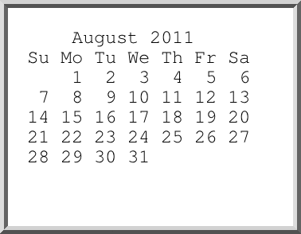

〜2011年8月下旬〜
というわけで、テレ玉、MXテレビ、tvkと3つUHF局が見られるようになった。
torneを買った当時はtvkとか放送大学とか入らなかったんだけど、
まあ、J:COMもいろいろとサービスしてくれているのかもしれない。
タイバニはMXでしかやってないだけにこれは便利。
かなりたまったので一気に見るか。
こういう地方局がきれいに見られるようになったのが地デジの利点と言えるか。
さて全開ガール見るかとtorneを立ち上げたらなぜかエラーになっていた。
torne側各局見てもどこも「受信できません」になってしまう。
その割には番組表は100%取得できてる。
アンテナはtorneを経由してテレビにつながっているが、そっちは問題なく受信できている。
というわけで信号に問題はないようだ。
ニュース7は録画できてたのでそれまでは動いていたようだ。何が原因なんだか。
まずは再起動だなと電源切って立ち上げなおしたらなんと復活した。
なんだそれ。ひとまず様子見。
21時5分ぐらいに見ようとしたので全開ガールはほぼ問題なし。
というか内容はどうでもいいんだけど。
タイミングよく
Load Tabs Progressively 1.6.1が出て、Gmail問題は解決。
レビューを読むとGmail以外ででも落ちてたようで。
油断してたら、また相棒の再放送が始まった!
なんとこんな簡単でいいんだ。やっぱ等幅のフォントを指定したほうがいいな。
% cal -h|convert -border 24 -bordercolor white -frame 10x10+5+5 -font FreeMono-Normal -pointsize 24 label:@- PNG8:cal.png

あれ？うちのFx6だと使えてしまってるんだけど、何が違うんだろう。
新規プロファイルで試してみると確かに使えない。
prefs.jsをコピーしてもだめなので、about:config関連でもない。
とすると拡張のどれかしかないよな。
数が多いしまた地道にON/OFFしないとわからないので、週末にでも。
syckとlibyamlとの違い。
% /usr/bin/ruby -ryaml -ve 'p YAML.load("[2,000]")'
ruby 1.8.7 (2010-08-16 patchlevel 302) [x86_64-linux]
[2000]
% ruby -ryaml -ve 'p YAML.load("[2,000]")'
ruby 1.9.4dev (2011-08-26 trunk 33072) [x86_64-linux]
[2, 0]
配列じゃなければlibyamlも2000になる。
% ruby -ryaml -ve 'p YAML.load("2,000")'
ruby 1.9.4dev (2011-08-26 trunk 33072) [x86_64-linux]
2000
参考: YAMLの数字とカンマと空白
もう一度見ようと残しといたが、いつのまにか期限切れになっていたようで。
結局地味な作業を繰り返してTab Utilities Liteをインストールすると
javascript:が有効になることがわかった。
というわけで、どうしても必要な人はインストールするといいと思うよ。
たぶんTab Utilitiesでも同じでしょう。
靴が原因かと思っていたが、夏休み中回復するどころかひどくなったので違う。
たぶん右足だけなので常に同じように組んでる胡座が原因かと思われる。
サロンパスを貼ってみたらかなり痛みが収まった。すげーな。
とりあえず組み足を逆にしてみよう。が、違和感が。
wの後は改行までがファイル名とみなされるというsedの仕様から面倒なことになっているが、
-eで2つに分ける方法もある。
% seq 20 | sed -e '5,6 { w out.txt' -e '}'
1
2
3
4
5
6
7
8
9
10
11
12
13
14
15
16
17
18
19
20
% cat out.txt
5
6
実はRubyでも同じで、たとえばコマンドラインでむりやりheredocしたいときは
% ruby -e 'p <<EOT' -e foo -e EOT "foo\n"
と書ける。まあ、これだと何のためのheredocなんだかわからんが。
mencoderだと-ssと-endposで。
% mencoder in.flv -ovc copy -oac copy -ss 0:20 -endpos 0:50 -o out.flv
ただ-oac copyは失敗するファイルが多いようで、
mp3lameとかpcmとか指定したほうがいいみたい。
ffmpegの場合は-ssと-tで。-tはduration。20秒から30秒間なので
% ffmpeg -i in.flv -vcodec copy -acodec copy -ss 20 -t 30 out.flv
となる。こっちはcopyでいける。ってことはffmpegを使ったほうがよさげだ。
久し振りにFedora 15でyum updateして再起動したらlighttpdが起動しない。
2011-08-31 10:34:05: (network.c.203) socket failed: Address family not supported by protocol
と言われしてしまう。そういえばipv6を殺したけどその影響かと/etc/lighttpd/lighttpd.confを確認してみると、
案の定、server.use-ipv6 = "enable"なんて設定が増えていた。"disable"にして解決。